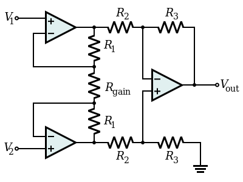

An instrumentation amplifier (sometimes shorthanded as in-amp or InAmp) is a type of differential amplifier that has been outfitted with input buffer amplifiers, which eliminate the need for input impedance matching and thus make the amplifier particularly suitable for use in measurement and test equipment. Additional characteristics include very low DC offset, low drift, low noise, very high open-loop gain, very high common-mode rejection ratio, and very high input impedances. Instrumentation amplifiers are used where great accuracy and stability of the circuit both short- and long-term are required.
Although the instrumentation amplifier is usually shown schematically identical to a standard operational amplifier (op-amp), the electronic instrumentation amplifier is almost always internally composed of 3 op-amps. These are arranged so that there is one op-amp to buffer each input (+, −), and one to produce the desired output with adequate impedance matching for the function.
The most commonly used instrumentation amplifier circuit is shown in the figure:

Figure: Instrumentation Amplifier
The gain of the circuit is:
A
v = V
out / V
2 - V
1 = (1 + 2R
1/R
gain)(R
3/R
2)
The rightmost amplifier, along with the resistors labelled R2 and R3 is just the standard differential-amplifier circuit, with gain = R3/R2 and differential input resistance = 2·R2. The two amplifiers on the left are the buffers. With Rgain removed (open-circuited), they are simple unity-gain buffers; the circuit will work in that state, with gain simply equal to R3/R2 and high input impedance because of the buffers. The buffer gain could be increased by putting resistors between the buffer inverting inputs and ground to shunt away some of the negative feedback; however, the single resistor Rgain between the two inverting inputs is a much more elegant method: it increases the differential-mode gain of the buffer pair while leaving the common-mode gain equal to 1. This increases the common-mode rejection ratio (CMRR) of the circuit and also enables the buffers to handle much larger common-mode signals without clipping than would be the case if they were separate and had the same gain. Another benefit of the method is that it boosts the gain using a single resistor rather than a pair, thus avoiding a resistor-matching problem and very conveniently allowing the gain of the circuit to be changed by changing the value of a single resistor. A set of switch-selectable resistors or even a potentiometer can be used for Rgain, providing easy changes to the gain of the circuit, without the complexity of having to switch matched pairs of resistors.